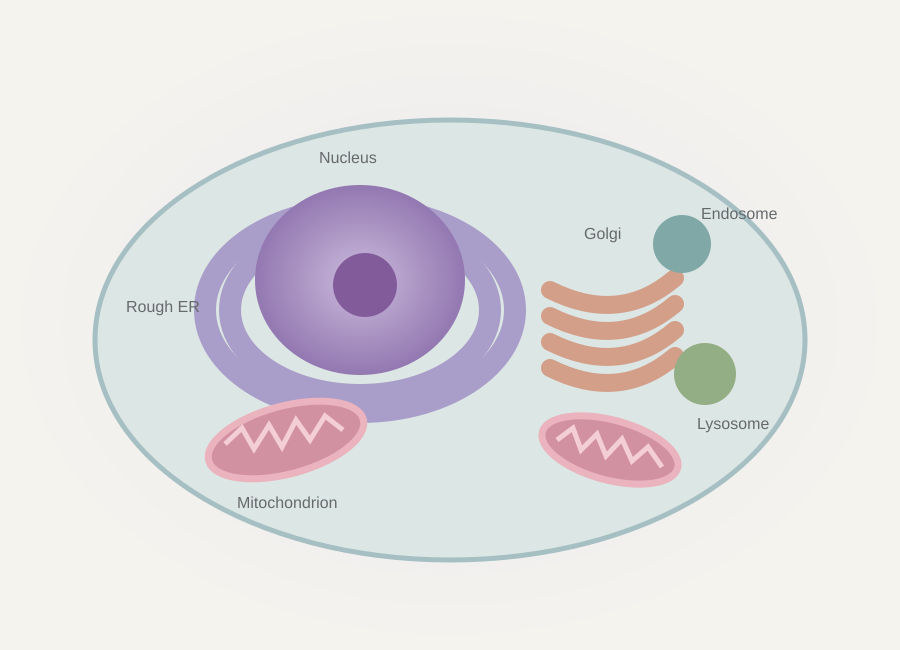

Building a world within.

The 3D view needs WebGL 2. Try a current browser with graphics acceleration enabled. You can still explore the learning content.
This original interactive prototype connects spatial anatomy, protein trafficking, and exam-style reasoning. Concept and direction by Blake Myers. It is independent of UWorld and uses no UWorld questions or artwork.
A schematic animal cell. Shapes, positions, quantities, sizes, and timing are adjusted for visibility. The cell is not a reconstruction of microscopy, and the routes are teaching paths rather than measured molecular trajectories.
The secreted-protein sequence shows a generic constitutive secretory route. The lysosomal sequence follows a soluble, M6P-dependent hydrolase through the Golgi and an endosome to the lysosome. Not all lysosomal proteins use this targeting route. Nuclear transcription and mRNA export precede the displayed sequence.
M6P formation is a two-step modification: GlcNAc-1-phosphotransferase initiates the signal, and an uncovering enzyme exposes M6P. The model groups these steps as “address tagging.” ER–Golgi intermediate compartments, receptor recycling, coat dynamics, and many other processes are omitted. I-cell disease has tissue-specific effects; the illustrated mechanism emphasizes fibroblast enzyme mistargeting.
The normal and disrupted states are qualitative teaching scenarios. No simulated quantities or animation timings represent patient measurements. Cases are fictional and intended for education.
Every selectable structure is available as a keyboard-accessible button. Use the playback slider to inspect the pathway without animation. The experience respects reduced-motion preferences. Your challenge progress stays in this browser.
Original procedural 3D geometry. Three.js, MIT license. No account, microphone, or external AI service is used.
Drag to orbit. Scroll or pinch to zoom. Select a structure in the cell or the panel. Open its cutaway to look inside.
Play or scrub a journey. Switch the destination. Introduce a defect and compare the consequences.
Make a prediction first. Then follow the mechanism that explains the answer.
Shortcuts: 1–3 switch modes · L toggles labels · R resets the view · Space plays or pauses a pathway. Shortcuts pause while typing or when a dialog is open.